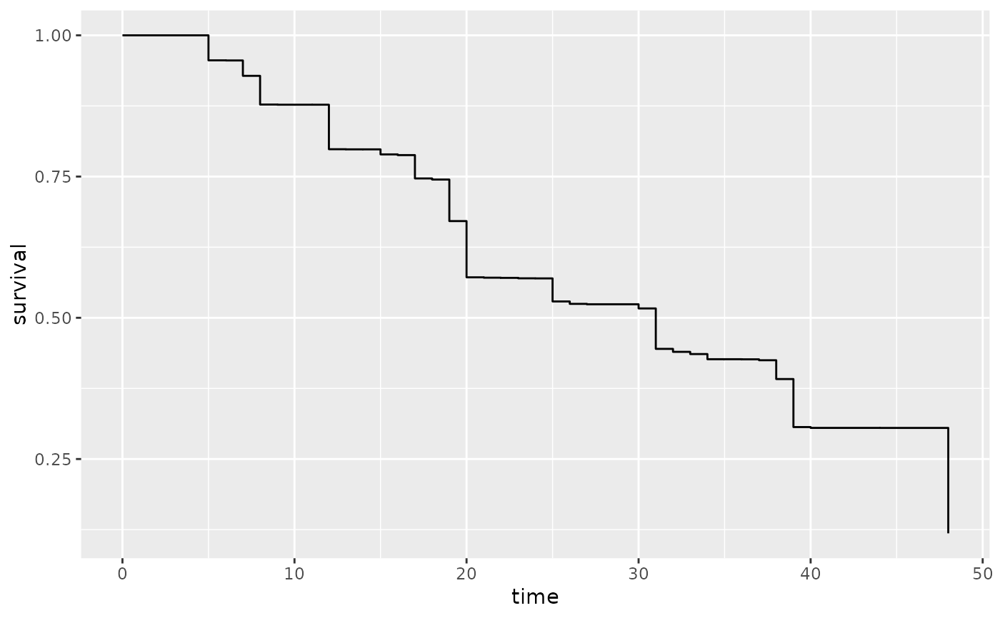

turnbull.RdTurnbull estimator for interval-censored survival data
turnbull(formula, data, eps = 0.001, iter.max = 200, verbose = FALSE, ...)an object of class "formula" (or one that can be coerced to that class): a symbolic description of the model to be fitted.
an optional data frame, list or environment (or object coercible by as.data.frame to a data frame) containing the variables in the model. If not found in data, the variables are taken from environment(formula), typically the environment from which yppe is called.
eps
maximum number of iterations of the algorithm
default = FALSE
further arguments passed to other methods
a data.frame with the estimated survivals
# \donttest{
library(sobrevivencia)
library(tidyverse)
#> ── Attaching core tidyverse packages ──────────────────────── tidyverse 2.0.0 ──
#> ✔ dplyr 1.1.0 ✔ readr 2.1.4
#> ✔ forcats 1.0.0 ✔ stringr 1.5.0
#> ✔ ggplot2 3.4.1 ✔ tibble 3.1.8
#> ✔ lubridate 1.9.2 ✔ tidyr 1.3.0
#> ✔ purrr 1.0.1
#> ── Conflicts ────────────────────────────────────────── tidyverse_conflicts() ──
#> ✖ dplyr::filter() masks stats::filter()
#> ✖ dplyr::lag() masks stats::lag()
#> ℹ Use the conflicted package to force all conflicts to become errors
data(mama)
mama <- mama %>%
mutate(
direita = ifelse(is.na(direita), Inf, direita)
)
tbe1 <- turnbull(Inter(esquerda, direita)~1, data = mama)
#> Iterations = 34
#> Max difference = 0.0009774945
#> Convergence criteria: Max difference < 1e-3
tbe2 <- turnbull(Inter(esquerda, direita)~terapia, data = mama)
#> Iterations = 40
#> Max difference = 0.0009817423
#> Convergence criteria: Max difference < 1e-3
#> Iterations = 30
#> Max difference = 0.0009723028
#> Convergence criteria: Max difference < 1e-3
ggplot(tbe2, aes(x=time, y=survival, color = terapia)) +
geom_step()
ggplot(tbe1, aes(x=time, y=survival)) +
geom_step()

# }